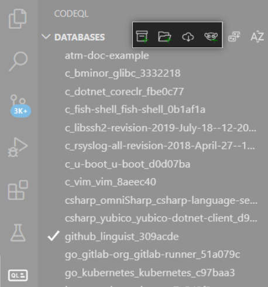
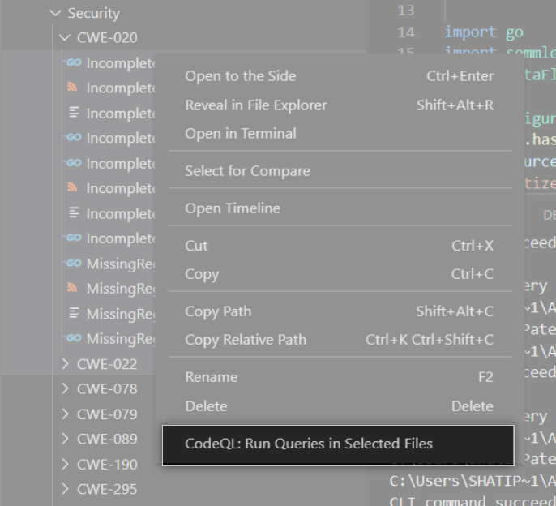

Analyzing your projects¶
You can run queries on CodeQL databases and view the results in Visual Studio Code.
Choosing a database¶
To analyze a project, you need to add a CodeQL database for that project.
Open the CodeQL Databases view in the sidebar.
Hover over the Databases title bar and click the appropriate icon to add your database. You can add a database from a local ZIP archive or folder, from a public URL, or from a project slug or URL on LGTM.com.
For more information about obtaining a local database, see below.
Once you’ve chosen a database, it is displayed in the Databases view. To see the menu options for interacting with a database, right-click an entry in the list. You can select multiple databases using Ctrl/Cmd+click.
{kind=link}
Obtaining a local database¶
If you have a CodeQL database saved locally, as an unarchived folder or as a ZIP file, you can add it to Visual Studio Code. There are several ways to obtain a local CodeQL database.
To create a database with the CodeQL CLI, see “Creating CodeQL databases.”
To download a database from LGTM.com:
Log in to LGTM.com.
Find a project you’re interested in and display the Integrations tab (for example, Apache Kafka).
Scroll to the CodeQL databases for local analysis section at the bottom of the page.
Download databases for the languages that you want to explore.
To analyze a test database, add a
.testprojfolder to the Databases view. Test databases (that is, folders with a.testprojextension) are generated when you run regression tests on custom queries using the CodeQL CLI. If a query fails a regression test, you may want to analyze the test database in Visual Studio Code to debug the failure.For more information about running query tests, see “Testing custom queries” in the CodeQL CLI help.
Running a query¶
The CodeQL repository on GitHub contains lots of example queries.
If you have that folder (or a different QL pack) available in your workspace, you can access existing queries under <language>/ql/src/<category>, for example java/ql/src/Likely Bugs.
Open a query (
.ql) file. It is displayed in the editor, with IntelliSense features such as syntax highlighting and autocomplete suggestions.Right-click in the query window and select CodeQL: Run Query. (Alternatively, run the command from the Command Palette.)
The CodeQL extension runs the query on the current database and reports progress in the bottom right corner of the application. When the results are ready, they’re displayed in the Results view.
If there are any problems running a query, a notification is displayed in the bottom right corner of the application. In addition to the error message, the notification includes details of how to fix the problem. For more information, see “Troubleshooting CodeQL for Visual Studio Code.”
Running multiple queries¶
You can run multiple queries with a single command.
Go to the File Explorer.
Select multiple files or folders that contain queries.
Right-click and select CodeQL: Run Queries in Selected Files.

{kind=link}
Running a quick query¶
When working on a new query, you can open a “quick query” tab to easily execute your code and view the results, without having to save a .ql file in your workspace.
Open a quick query editing tab by selecting CodeQL: Quick Query from the Command Palette.
To run the query, use CodeQL: Run Query.
You can see all quick queries that you’ve run in the current session in the Query History view. Click an entry to see the exact text of the quick query that produced the results.
Once you’re happy with your quick query, you should save it in a QL pack so you can access it later. For more information, see “About QL packs.”
Running a specific part of a query or library¶
This is helpful if you’re debugging a query or library and you want to locate the part that is wrong.
Instead of using CodeQL: Run Query to run the whole query (the select clause and any query predicates), you can use CodeQL: Quick Evaluation to run a specific part of a .ql or .qll file.
CodeQL: Quick Evaluation evaluates a code snippet (instead of the whole query) and displays results of that selection in the Results view. Possible targets for quick evaluation include:
Selecting the name of a CodeQL entity (such as a class or predicate) to evaluate that entity.
Selecting a formula or expression with free variables to evaluate that formula or expression.
For example, in the following snippet, you could select the predicate name foo or the formula s = "bar" for quick evaluation.
predicate foo(string s) { s = "bar" }
Running a query on multiple databases¶
This is helpful if you want to test your query on multiple codebases, or find a vulnerability in multiple projects.
Open a query (
.ql) file.Right-click and select CodeQL: Run Query on Multiple Databases.
From the dropdown menu, select the databases that you want to run the query on.
Viewing previous queries¶
To see the queries that you have run in the current session, open the Query History view.
{kind=link}
The Query History contains information including the date and time when the query was run, the name of the query, the database on which it was run, and how long it took to run the query. To customize the information that is displayed, right-click an entry and select Set Label.
Click an entry to display the corresponding results in the Query Results view, and double-click to display the query itself in the editor (or right-click and select Open Query). To display the exact text that produced the results for a particular entry, right-click it and select Show Query Text. This can differ from Open Query as the query file may have been modified since you last ran it.
To remove queries from the Query History view, select all the queries you want to remove, then right-click and select Remove History Item.
Viewing query results¶
Click a query in the Query History view to display its results in the Results view.
Note
Depending on the query, you can also choose different views such as CSV, SARIF, or DIL format. For example, to view the DIL format, right-click a result and select View DIL. The available output views are determined by the format and the metadata of the query. For more information, see “CodeQL queries.”
Use the dropdown menu in the Results view to choose which results to display, and in what form to display them, such as a formatted alert message or a table of raw results.
To sort the results by the entries in a particular column, click the column header.
If a result links to a source code element, you can click it to display it in the source.
To use standard code navigation features in the source code, you can right-click an element and use the commands Go to Definition or Go to References. This runs a CodeQL query over the active file, which may take a few seconds. This query needs to run once for every file, so any additional references from the same file will be fast.
Note
If you’re using an older database, code navigation commands such as Go to Definition and Go to References may not work. To use code navigation, try unzipping the database and running
codeql database cleanup <database>on the unzipped database using the CodeQL CLI. Then, re-add the database to Visual Studio Code. For more information, see the database cleanup reference documentation.
Comparing query results¶
When you’re writing or debugging a query, it’s useful to see how your changes affect the results. You can compare two sets of results to see exactly what has changed. To compare results, the two queries must be run on the same database.
Right-click a query in the Query History view and select Compare Results.
A Quick Pick menu shows all valid queries to compare with. Select a query.
The Compare view shows the differences in the results of the two queries.